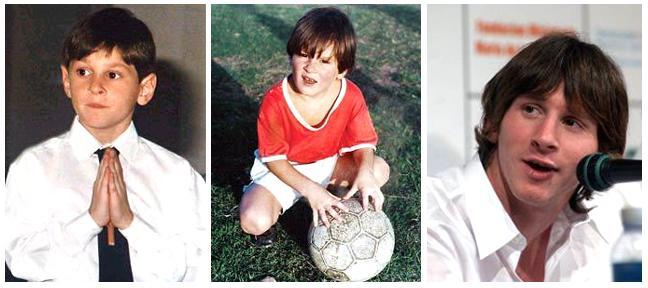

Karir Lionel Messi

Pria bernama asli Lionel Andres Messi yang lahir di Argentina Tengah ini hidup di tengah lingkungan dan keluarga pecinta sepakbola, sehingga memberikan pengaruh luar biasa bagi Messi untuk bersemangat bermain sepakbola sejak usia dini. Di usia empat tahun, Messi sudah bergabung dengan klub sepakbola lokal bernama Grandoli yang dilatih oleh ayahnya sendiri. Meski begitu, pengaruh terbesar dalam karir sepakbolanya justru datang dari neneknya, Celia yang selalu setia dalam menemaninya saat sedang latihan dan mengikuti pertandingan.
Pada usia enam tahun, Messi bergabung dengan klub lokal Rosario bernama Newell’s Old Boys, dan selama enam tahun bergabung, pemain bernomor punggung 10 ini telah mencetak hampir 500 gol. Namun, di usia 10 tahun, cita-citanya sebagai pemain bola professional menjadi terancam karena Messi didiagnosa menderita kekurangan hormon pertumbuhan (growth hormone deficiency). Berhubung asuransi kesehatan milik ayahnya hanya mampu menutupi pembiayaan penyakitnya yang mencapai $1000 per bulannya hanya untuk masa dua tahun.
Akhirnya, karena keluarga Messi memiliki kerabat di Catalonia, mereka merencanakan untuk mencoba memasukkan Messi ke klub Barcelona guna mendapatkan bantuan biaya perawatan penyakitnya di tahun 2000. Direktur tim pertama, Charly Rexach menyetujui hal tersebut, dan menawarkan sebuah kontrak yang pada waktu itu hanya ditulis di selembar sapu tangan.